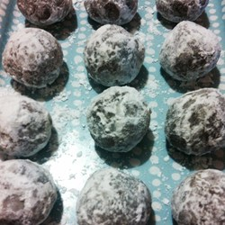

Recipe 2
No Bake Oatmeal Cookies

Ingredients
- 2 cups rolled oats
- 3/4 cup white sugar
- 3 tablespoons unsweetened cocoa powder
- 1 tablespoon water
- 1/2 teaspoon vanilla
- 2/3 cup butter, softened
- 1 cup confectioners' sugar
- Add all ingredients to list
Details
- In a large bowl, combine the oats, sugar and cocoa. With clean hands, mix in the water, vanilla and butter to form a dough. Wash hands, then roll the dough into balls 1 to 2 inches in diameter. Roll balls in confectioners' sugar until thickly coated (or they will become crusty). Chill 20 minutes before serving.